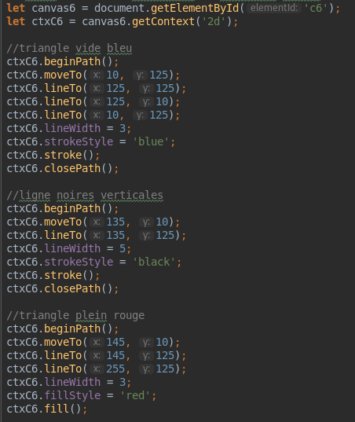
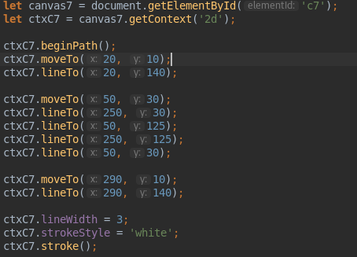
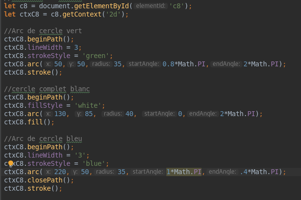

L’élément HTML canvas est un élément qui va servir de conteneur et au sein duquel on va pouvoir dessiner toutes sortes de graphiques en utilisant le JavaScript.
Canvas est centré autour du dessin 2D
<canvas> va servir de conteneur pour nos dessins et figures. Nous allons dessiner à l’intérieur de celui-ci.
Exemple de code dans le html
<body>
<canvas id="c1" style="background-color: orange;" width="200px" height="100px" > </canvas>
</body>
Par défaut, l’élément canvas est représenté visuellement par une zone rectangulaire de 300px de large par 150px de haut dans la page HTML, est transparent et ne possède ni contenu, ni bordure.
Pour modifier la taille d’un élément canvas, on peut soit utiliser les attributs HTML width (pour la largeur) et height (pour la hauteur),
soit les propriétés width et height de l’interface HTMLCanvasElement qui hérite de l’interface DOM HTMLElement qu’on connait bien.
Pour dessiner au sein d’un élément canvas en JavaScript, il faut suivre ces étapes ;
On peut utiliser document.querySelector() ou document.getElementById()
let canvasElt = document.getElementById('c1')
canvas crée en effet une surface de dessin qui va exposer plusieurs contextes sur lesquels on va se baser pour dessiner.
Les deux contextes les plus connus et utilisés sont le contexte 2D et le contexte 3D
La méthode getContext() permet d'accéder à ce contexte. On y passe en argument le contexte auquel on veut accéder.
let ctx = canvasElt.getContext('2d');
getContext() renvoie un objet appartenant à l’interface CanvasRenderingContext2D. Nous allons utiliser cet objet pour accéder aux méthodes de cette interface qui vont nous permettre de dessiner.
canvas ne supporte qu’un type de figure géométrique : le rectangle (vide et plein). Les autres types de figures vont êtes construites en traçant des lignes à partir de coordonnées de points qu’on va donner.
1 - Assigner une valeur à strokeStyle
Pour dessiner un rectangle vide dans notre canevas, on va donc déjà commencer par fournir une valeur à la propriété strokeStyle puis on utilisera la méthode strokeRect() pour définir l’emplacement et la taille de notre rectangle vide comme ceci.
strokeStyle permet de dessiner le contour du rectangle. Il est impératif d'exécuter strokeStyle avant strokeRect()
Attention ici : si on exécute la méthode strokeRect() avant d’avoir passé une valeur à strokeStyle, cette valeur ne pourra pas être utilisée pour dessiner les contours de notre rectangle vide.
strokeStyle peut prendre une couleur, un dégradé ou un motif.
2 - Utiliser la méthode strokeRect()
Avec strokeRect(), seul le contour du rectangle sera dessiné. Ce contour sera dessiné en utilisant la valeur de la propriété strokeStyle
strokeRect() prend 4 arguments : les deux premiers correspondent respectivement au retrait de notre rectangle par rapport aux bord gauche et bord supérieur de notre canevas tandis que les deux autres servent à indiquer la largeur et la hauteur de notre rectangle.
Attention : ne pas préciser d’unités avec les arguments de strokeRect()
En pratique :
let canvas2 = document.getElementById('c2');
let ctxC2 = canvas2.getContext('2d');
ctxC2.strokeStyle = '#4444CC'; - // Nuance de bleu
ctxC2.strokeRect(50, 25, 200, 100); - // A noter que nouv obtenons un caneva de 300x150px, avec à l'intérieur, un triangle vide de 200x100px
fillStyle et fillRect() s'utilise de la même façon que strokeRect(). On ne précisera pas d’unités lorsqu’on passe des arguments.
On doit commencer par fournir une valeur à fillStyle puis utiliser ensuite fillRect() pour dessiner un rectangle plein dans le canevas.
let canvas3 = document.getElementById('c3');
let ctxC3 = canvas3.getContext('2d');
ctxC3.fillStyle = "#4444CC"; - //Nuance de bleu
ctxC3.fillRect(10, 10, 200, 100); - // cette fois le rectangle est plein
clearRect() prend 4 arguments (sans unités également): retrait bord gauche, retrait bord supérieur, largeur, et hauteur.
let canvas4 = document.getElementById('c4');
let ctxC4 = canvas4.getContext('2d');
ctxC4.fillStyle = "#4444CC"; //Nuance de bleu
ctxC4.fillRect(10, 10, 200, 100);
ctxC4.strokeStyle = "#4444CC";
ctxC4.strokeRect(250, 10, 200, 100);
ctxC4.clearRect(100, 25, 150, 50); - // on "évide" les rectangles créés dans le canvas
On peut aussi définir des tracés pour créer toutes formes de figures et de dessins.
Un tracé va être représenté par un point d’origine, une suite de points intermédiaire et un point d’arrivée. Des segments vont ensuite être tracés pour relier les différents points entre eux.
Il faut suivre les étapes suivantes :
En pratique :
let canvas5 = document.getElementById('c5');
let ctxC5 = canvas5.getContext('2d');
ctxC5.beginPath();
ctxC5.moveTo(50, 25);
ctxC5.lineTo(250, 125);
ctxC5.lineWidth = 3;
ctxC5.strokeStyle ='#4488EE';
ctxC5.stroke();
On peut dessiner toutes sortes de figures en dessinant plusieurs lignes à la suite dans le canevas.
En pratique
moveTo() permet aussi de définir de nouvelle coordonnées de départ pour chaque nouvelle ligne.
arc() prend 6 arguments :
Pour rappel : un tour de cercle complet = 360deg = 2PI radian. Pour convertir facilement les degrés en radians, vous pouvez retenir l’équation suivante : radians = PI*deg / 180. Pour obtenir la valeur de PI, on peut utiliser Math.PI.
artTo() utlise des tangentes pour dessiner des arcs de cercle, et prend 5 arguments:
Les courbes de Bézier sont des courbes définies à partir d’un certain nombre de points.
bezierCurveTo() prend 6 arguments
quadraticCurveTo() n'utilise e qu’un point de contrôle et ne va donc avoir besoin que de 4 arguments.
Ces points de contrôle vont servir à déterminer un certain arc en traçant de multiples tangentes entre le point de départ et d’arrivée.
On peut créer deux sortes de dégradés : des dégradés linéaires ou radiaux.
On peut utiliser des images ou des captures d’images de vidéos comme motifs.
createLinearGradient() prend 4 arguments : et retourne un objet CanvasGradient.
addColorStop() permet d’ajouter des « couleurs stop », c’est-à-dire des points d’arrêt ou encore des transitions de couleurs dans notre dégradé.
Elle prend 2 arguments :
En pratique :

Un dégradé radial est un dégradé qui part d’un point central et se propage dans toutes les directions à partir de celui-ci et selon une ellipse.
createRadialGradient() prend 6 arguments (et retourne un objet CanvasGradient)
En pratique :